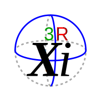

Welcome to Reality
Powered by Xi 3rd generation computing.
Learn how the universe works and how we can make our own
luck.
Your gateway to learning science and mathematics the logical way.
With Xi, all tutoring happens locally on your device—no internet dependency.
No snooping, and fully
optimized for your learning needs.
What You Can Expect
- ✔ Local-first tutoring powered by Xi
- ✔ Privacy-respecting learning
- ✔ Free access to tools that build code and logic
Stay tuned for Xi, launching in 2025.
Xi will teach logic to everyone, delivering humanity one life at a
time.
Explore the science: 3R Xi Scientific Modelling